Forest plots provide a graphical representation of effect estimates and their precision. Each row displays a point estimate (typically an odds ratio, hazard ratio, or regression coefficient) with a confidence interval, enabling rapid visual assessment of effect magnitude, direction, and statistical significance. The format is standard in published research and regulatory submissions.
The summata package provides specialized forest plot
functions for each model type, plus an automatic detection function:
| Function | Model Type | Effect Measure |
|---|---|---|
lmforest() |
Linear regression | Coefficient (β) |
glmforest() |
Logistic/Poisson | Odds ratio / Rate ratio |
coxforest() |
Cox regression | Hazard ratio |
uniforest() |
Univariable screening | Model-dependent |
multiforest() |
Multi-outcome analysis | Model-dependent |
autoforest() |
Auto-detect | Auto-detect |
These functions follow a standard syntax when called:
forest_plot <- autoforest(x, data, ...)where x is either a model or a summata
fitted output (e.g., from uniscreen(), fit(),
fullfit(), or multifit()), and
data is the name of the dataset used. The data
argument is optional and is primarily used to derive n and
Events counts for various groups/subgroups.
All forest plot functions produce ggplot2 objects that
can be further customized. This vignette demonstrates the various
capabilities of these functions using the included sample dataset.
Preliminaries
The examples in this vignette use the clintrial dataset
included with summata:
Moreover, note that all plots in this vignette are generated using
the ggsave() function with recommended
dimensions—i.e.,
ggsave("output.png", plot,
width = attr(plot, "rec_dims")$width,
height = attr(plot, "rec_dims")$height,
units = "in")This ensures that the figure size is always large enough to
accommodate the constituent plot text and graphics, and it is generally
the preferred method for saving forest plot outputs in
summata.
Creating Forest Plots from Model Objects
Forest plots can be created from standard R model objects or from
summata function output.
Example 1: Logistic Regression
Fit a model using base R, then create a forest plot:
logistic_model <- glm(
surgery ~ age + sex + stage + treatment + ecog,
data = clintrial,
family = binomial
)
example1 <- glmforest(
x = logistic_model,
data = clintrial,
title = "Logistic Regression: Predictors of Outcome",
labels = clintrial_labels
)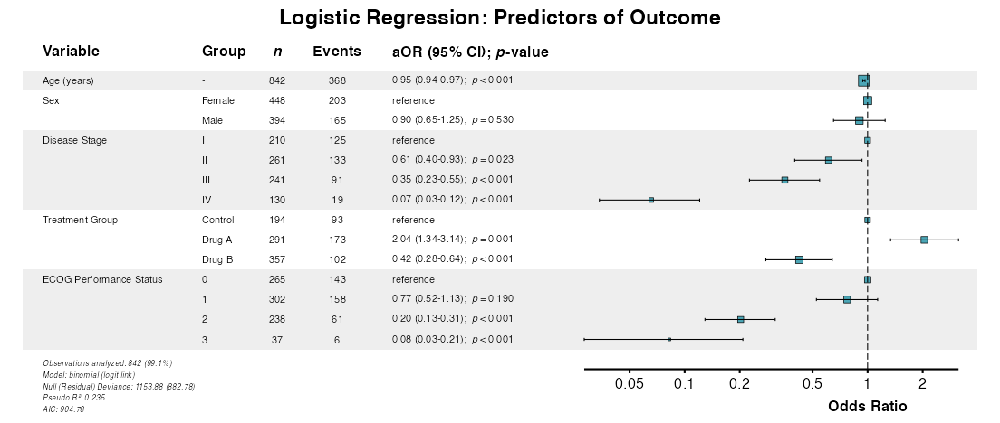
Example 2: Linear Regression
For continuous outcomes, use lmforest():
linear_model <- lm(
los_days ~ age + sex + stage + surgery + ecog,
data = clintrial
)
example2 <- lmforest(
x = linear_model,
data = clintrial,
title = "Linear Regression: Length of Stay",
labels = clintrial_labels
)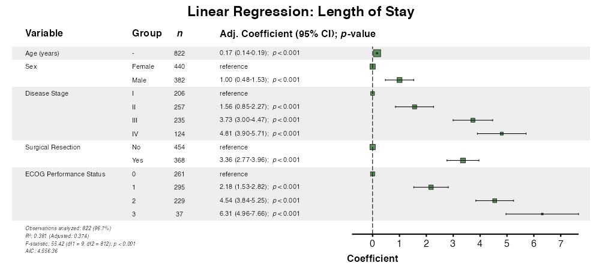
Example 3: Cox Regression
For survival models, use coxforest():
Example 4: Automatic Model Detection
The autoforest() function detects the model type
automatically:
example4 <- autoforest(
x = cox_model,
data = clintrial,
labels = clintrial_labels
)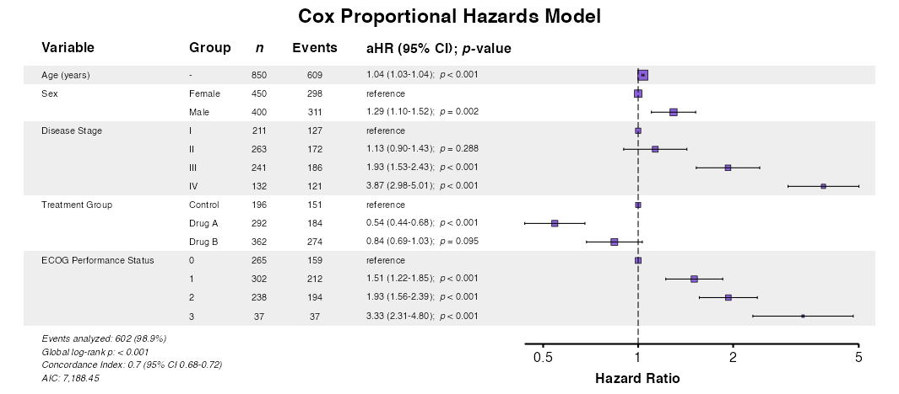
Creating Forest Plots from summata Output
Forest plots integrate seamlessly with fit() and
fullfit() output by extracting the attached model
object.
Example 5: Direct Extraction from Fit Output
The same approach works for logistic models:
table_logistic <- fit(
data = clintrial,
outcome = "surgery",
predictors = c("age", "sex", "stage", "treatment", "ecog"),
model_type = "glm",
labels = clintrial_labels
)
example5 <- glmforest(
x = attr(table_logistic, "model"),
title = "Predictors of Surgical Intervention",
labels = clintrial_labels,
zebra_stripes = TRUE
)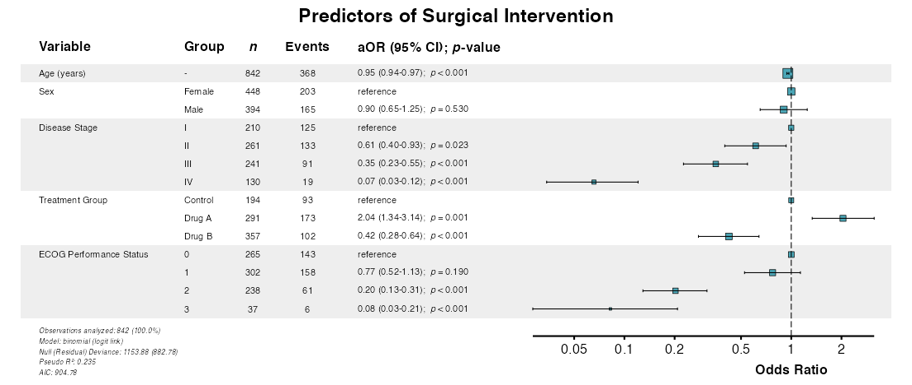
Example 6: Model Attribute from Fit Output
And for Cox models:
table_cox <- fit(
data = clintrial,
outcome = "Surv(os_months, os_status)",
predictors = c("age", "sex", "stage", "treatment", "ecog"),
model_type = "coxph",
labels = clintrial_labels
)
example6 <- coxforest(
x = attr(table_cox, "model"),
title = "Predictors of Overall Survival",
labels = clintrial_labels,
zebra_stripes = TRUE
)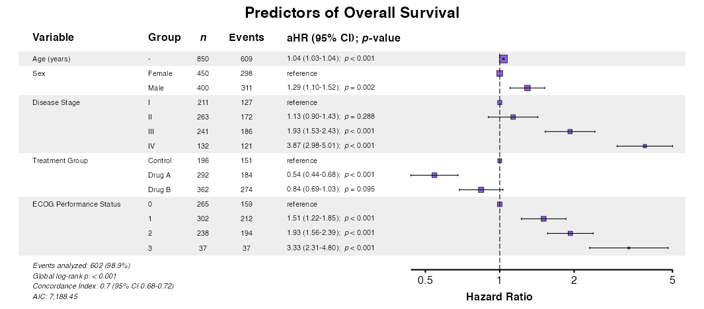
Display Options
Example 7: Indenting Factor Levels
The indent_groups parameter creates hierarchical display
for a more compact aesthetic:
example7 <- glmforest(
x = attr(table_logistic, "model"),
title = "Indented Factor Levels",
labels = clintrial_labels,
indent_groups = TRUE
)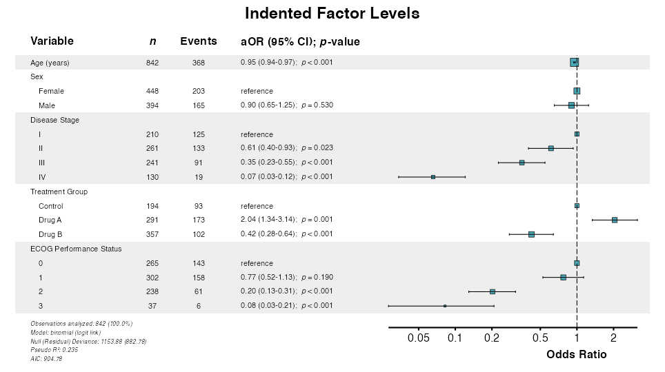
Example 8: Condensing Binary Variables
The condense_table parameter displays binary variables
on single rows. Group indenting is applied automatically:
example8 <- glmforest(
x = attr(table_logistic, "model"),
title = "Condensed Display",
labels = clintrial_labels,
condense_table = TRUE
)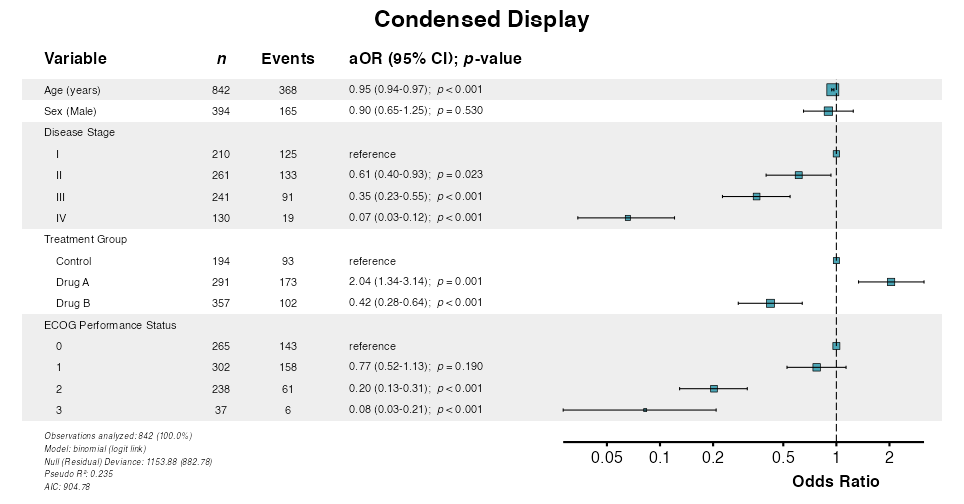
Example 9: Toggle Zebra Striping
Zebra striping is enabled by default. It can be disabled via
zebra_stripes = FALSE:
example9 <- glmforest(
x = attr(table_logistic, "model"),
title = "Without Zebra Striping",
labels = clintrial_labels,
indent_groups = TRUE,
zebra_stripes = FALSE
)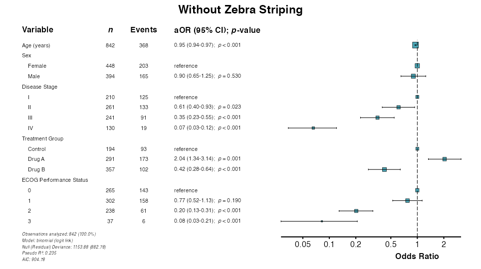
Example 10: Sample Size and Event Columns
Control display of sample size (n) and event counts:
# Show both n and events
example10a <- coxforest(
x = attr(table_cox, "model"),
title = "With Sample Size and Events",
labels = clintrial_labels,
show_n = TRUE,
show_events = TRUE,
indent_groups = TRUE,
zebra_stripes = TRUE
)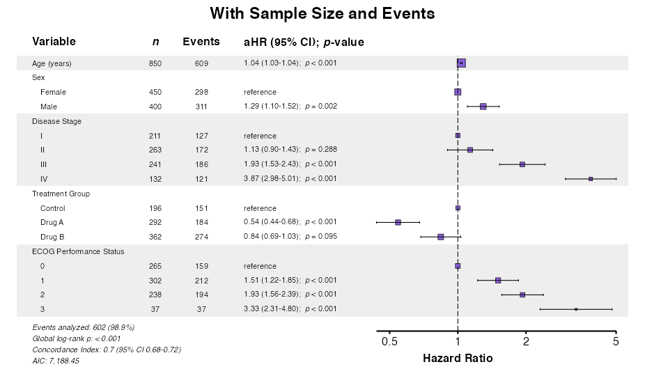
# Minimal display
example10b <- coxforest(
x = attr(table_cox, "model"),
title = "Minimal Display",
labels = clintrial_labels,
show_n = FALSE,
show_events = FALSE,
indent_groups = TRUE
)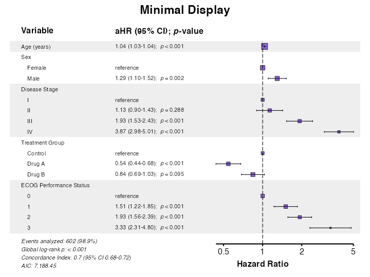
Formatting Options
Example 11: Adjusting Numeric Precision
The digits parameter controls decimal places for effect
estimates and confidence intervals:
example11 <- glmforest(
x = attr(table_logistic, "model"),
title = "Custom Precision (3 decimal places)",
labels = clintrial_labels,
digits = 3,
indent_groups = TRUE
)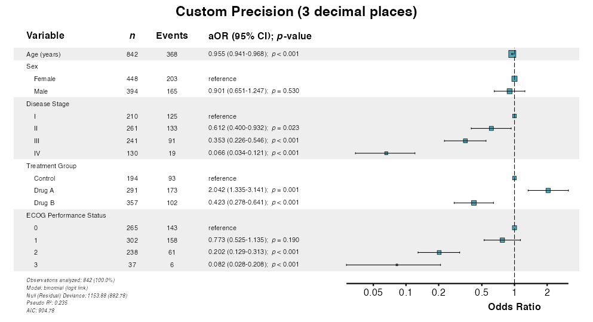
Example 12: Custom Reference Label
Customize the label shown for reference categories:
example12 <- glmforest(
x = attr(table_logistic, "model"),
title = "Custom Reference Label",
labels = clintrial_labels,
ref_label = "ref",
indent_groups = TRUE
)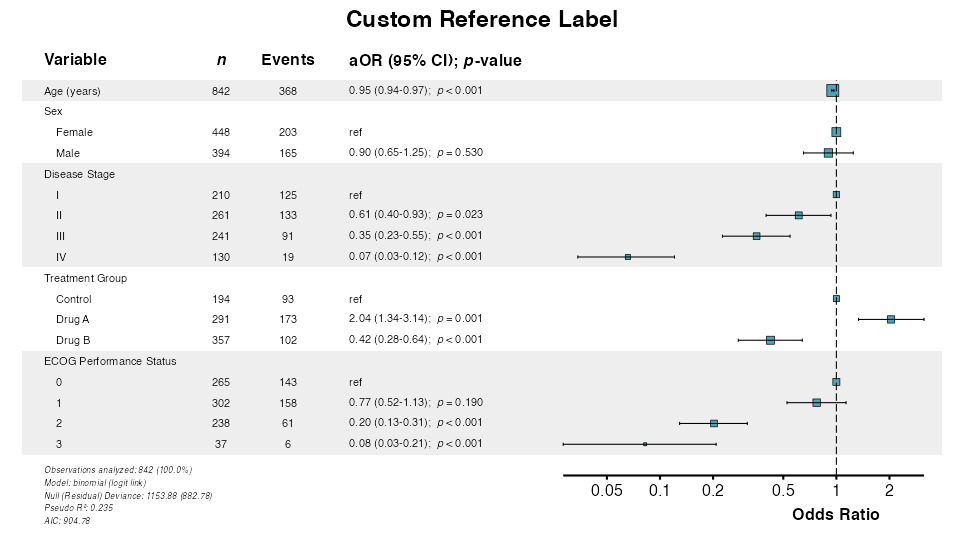
Example 13: Custom Effect Measure Label
Change the column header for the effect measure:
example13 <- coxforest(
x = attr(table_cox, "model"),
title = "Custom Effect Label",
labels = clintrial_labels,
effect_label = "Effect (95% CI)",
indent_groups = TRUE
)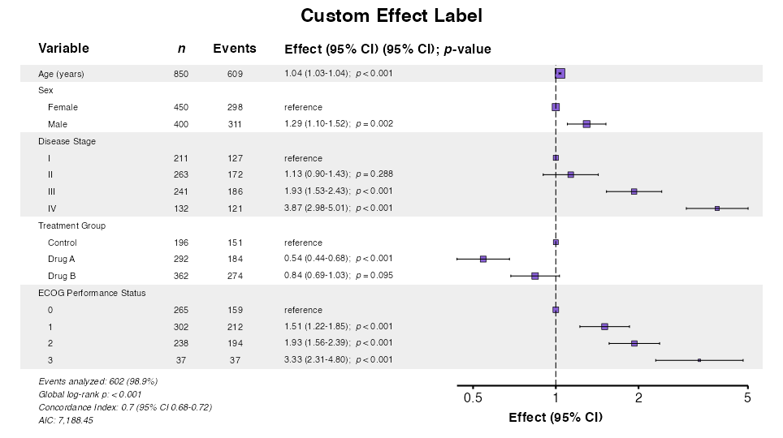
Example 14: Custom Colors
The color parameter changes the point and line
color:
example14 <- glmforest(
x = attr(table_logistic, "model"),
title = "Custom Color",
labels = clintrial_labels,
color = "#E41A1C",
indent_groups = TRUE
)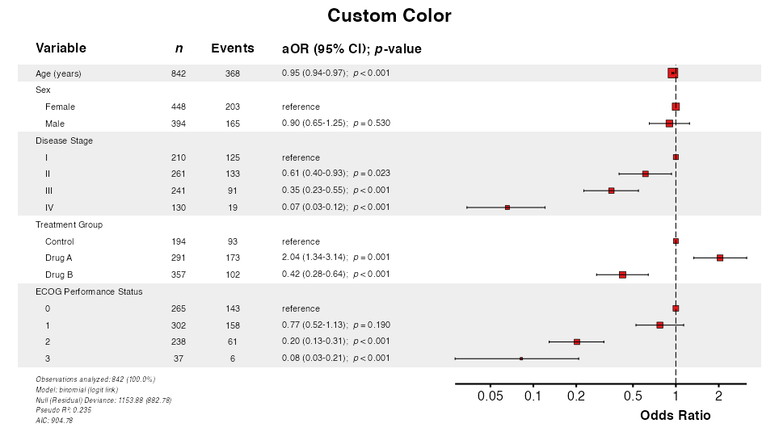
Example 15: Change Font Sizes
Adjust text size with the font_size multiplier:
example15 <- glmforest(
x = attr(table_logistic, "model"),
title = "Larger Font (1.5×)",
labels = clintrial_labels,
font_size = 1.5,
indent_groups = TRUE
)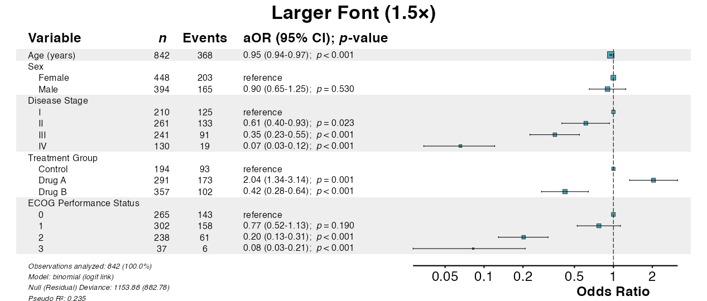
Example 16: Table Width
The table_width parameter adjusts the proportion of
space allocated to the table vs. the forest plot:
# Wide table (for long variable names)
example16a <- glmforest(
x = attr(table_logistic, "model"),
title = "Wide Table (75%)",
labels = clintrial_labels,
table_width = 0.75
)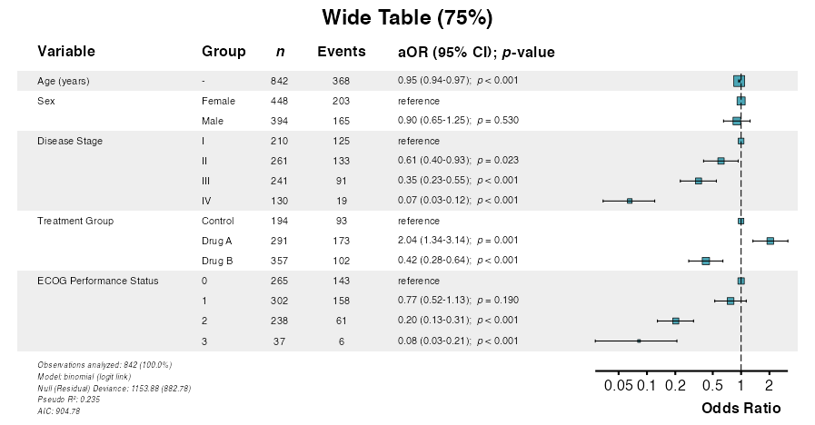
# Narrow table (emphasizes forest plot)
example16b <- glmforest(
x = attr(table_logistic, "model"),
title = "Narrow Table (50%)",
labels = clintrial_labels,
table_width = 0.50
)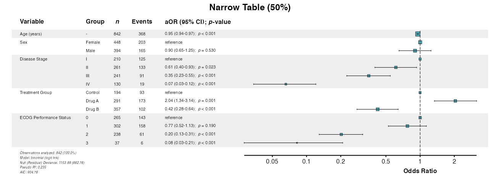
Saving Forest Plots
Forest plots include a rec_dims attribute for optimal
sizing when saving to files.
Example 17: Recommended Dimensions
Use the recommended dimensions for optimal output:
p <- glmforest(
x = attr(table_logistic, "model"),
title = "Publication-Ready Plot",
labels = clintrial_labels,
indent_groups = TRUE,
zebra_stripes = TRUE
)
# Get recommended dimensions
dims <- attr(p, "rec_dims")
cat("Width:", dims$width, "inches\n")
cat("Height:", dims$height, "inches\n")
# Save with recommended dimensions
ggsave(
filename = "forest_plot.pdf",
plot = p,
width = dims$width,
height = dims$height,
units = "in"
)Example 18: Multiple Formats
Export to different formats as needed:
p <- glmforest(
x = attr(table_logistic, "model"),
title = "Forest Plot",
labels = clintrial_labels
)
dims <- attr(p, "rec_dims")
# PDF (vector, best for publications)
# ggsave("forest.pdf", p, width = dims$width, height = dims$height)
# PNG (raster, good for presentations)
# ggsave("forest.png", p, width = dims$width, height = dims$height, dpi = 300)
# TIFF (high-quality raster, often required by journals)
# ggsave("forest.tiff", p, width = dims$width, height = dims$height, dpi = 300)
# SVG (vector, good for web)
# ggsave("forest.svg", p, width = dims$width, height = dims$height)Advanced Customization
Forest plots support extensive customization for publication requirements.
Example 19: Combined Options
Combine multiple options for publication-ready output:
example19 <- coxforest(
x = attr(table_cox, "model"),
title = "Comprehensive Survival Analysis",
labels = clintrial_labels,
effect_label = "Hazard Ratio",
digits = 2,
show_n = TRUE,
show_events = TRUE,
indent_groups = TRUE,
condense_table = FALSE,
zebra_stripes = TRUE,
ref_label = "reference",
font_size = 1.0,
table_width = 0.62,
color = "#8A61D8"
)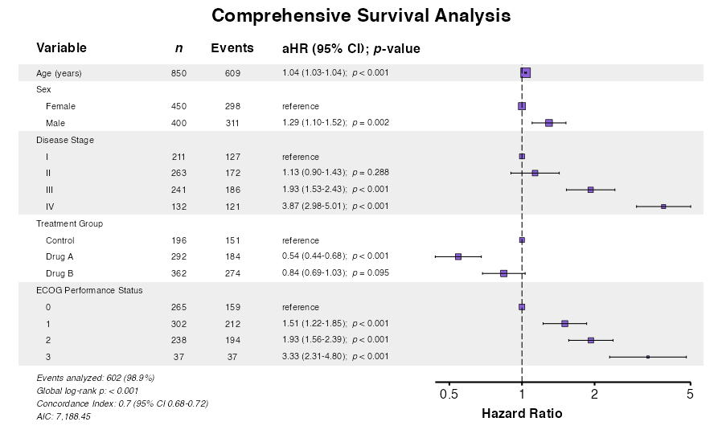
Example 20: Extensions with ggplot2
Forest plots are ggplot2 objects and can be modified
further:
example20 <- glmforest(
x = attr(table_logistic, "model"),
title = "Extended with ggplot2",
labels = clintrial_labels,
indent_groups = TRUE
)
example20_modified <- example20 +
theme(
plot.title = element_text(face = "italic", color = "#A72727"),
plot.background = element_rect(fill = "white", color = NA)
)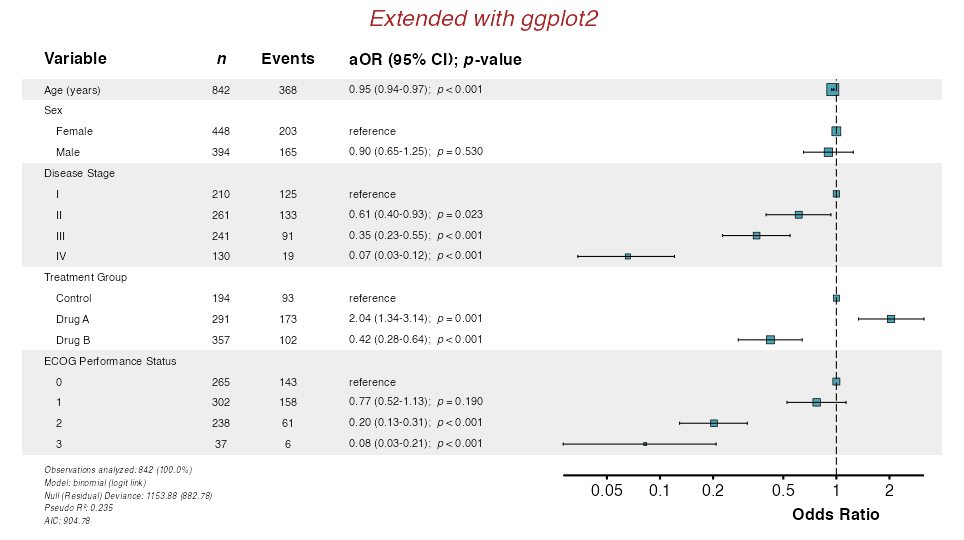
Additional GLM Families
The glmforest() function supports all GLM families.
These can be plotted in a similar fashion to standard logistic
regression forest plots. See Regression Modeling for the full
list of supported model types.
Example 21: Poisson Regression
For equidispersed count outcomes (variance ≈ mean), use Poisson regression:
poisson_model <- glm(
fu_count ~ age + stage + treatment + surgery,
data = clintrial,
family = poisson
)
example21 <- glmforest(
x = poisson_model,
data = clintrial,
title = "Poisson Regression: Follow-Up Visits",
labels = clintrial_labels
)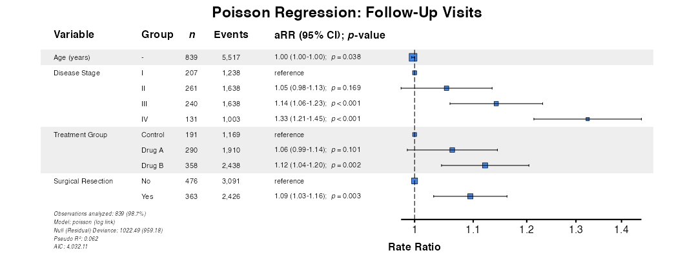
Example 22: Negative Binomial Regression
For overdispersed count outcomes (variance > mean), negative
binomial regression is preferred. Using fit() ensures
proper handling:
nb_result <- fit(
data = clintrial,
outcome = "ae_count",
predictors = c("age", "treatment", "diabetes", "surgery"),
model_type = "negbin",
labels = clintrial_labels
)
example22 <- glmforest(
x = nb_result,
title = "Negative Binomial: Adverse Events"
)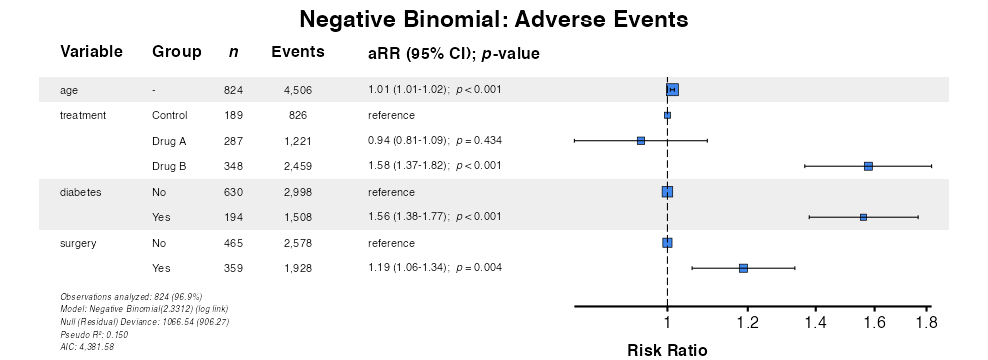
Function Parameter Summary
| Parameter | Description | Default |
|---|---|---|
x |
Model object or model from fit()
output |
Required |
data |
Data frame (required for model objects) | NULL |
title |
Plot title | NULL |
labels |
Named vector for variable labels | NULL |
indent_groups |
Indent factor levels under variable names | FALSE |
condense_table |
Show binary variables on single row | FALSE |
zebra_stripes |
Alternating row shading | TRUE |
show_n |
Display sample size column | TRUE |
show_events |
Display events column (Cox models) | TRUE |
digits |
Decimal places for estimates | 2 |
ref_label |
Label for reference categories | "reference" |
effect_label |
Column header for effect measure | Model-dependent |
color |
Color for points and lines | Effect-type dependent |
font_size |
Text size multiplier | 1.0 |
table_width |
Proportion of width for table | 0.55 |
Best Practices
Model Preparation
- Ensure all factor levels are properly defined before fitting
- Use meaningful reference categories
- Consider centering continuous variables for interpretability
- Check model convergence before plotting
Common Issues
Long Variable Names
If variable names are truncated, increase
table_width:
p <- glmforest(model, table_width = 0.75)Further Reading
-
Descriptive Tables:
desctable()for baseline characteristics -
Survival Tables:
survtable()for time-to-event summaries -
Regression Modeling:
fit(),uniscreen(), andfullfit() -
Model Comparison:
compfit()for comparing models - Table Export: Export to PDF, Word, and other formats
-
Multivariate Analysis:
multifit()for multi-outcome analysis - Advanced Workflows: Interactions and mixed-effects models